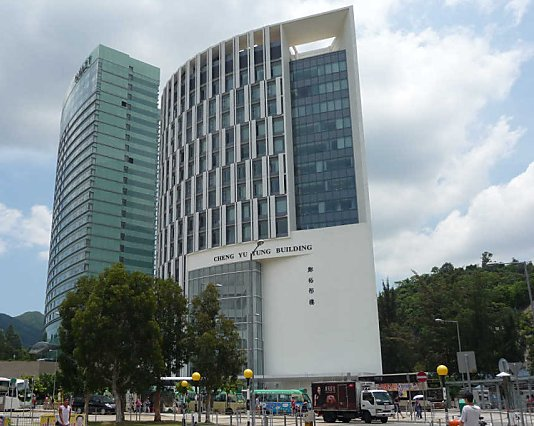

Conference Venue
Cheng Yu Tung Building, Chinese University of Hong Kong (CUHK), Shatin
The Cheng Yu Tung Building is next to the University Station (MTR) and one of the conference hotels Hyatt Regency Hong Kong, Sha Tin.

You can get there:
By MTR:
Get off at the University Station. Cheng Yu Tung Building is just 2-minute walk away from Exit B.
Driving Directions:
From Kowloon:
Take Tolo Highway (Route 9) North, exit at "Exit 4" towards Ma On Shan/ Ma Liu Shui/
University Station, and take the 1st exit to Chak Cheung Street at the roundabout.
From Tai Po:
Take Tolo Highway (Route 9) South, exit at "Exit 4" towards Science Park/ Ma Liu
Shui/ University Station, and take the 1st exit to Chak Cheung Street at the
roundabout.
Travel and Visa
Get to the CUHK campus/Conference venue:
Via Hong Kong International Airport:
Attendees flying into Hong Kong International Airport will need to pass through immigration,
collect luggage and then pass through customs. There are several options to travel from the
Main Hall of the Terminal.
- Taxi: The easiest way to travel, taxis are readily available outside of the terminal. Please print this page for the driver as many only speak Mandarin or Cantonese.
- Airport Express/MTR: Get off at University Station (MTR).
Via Lo Wu or Southbound Direct Train:
Get off at the University Station (MTR), it is about 2 minutes walking distance to the
conference venue. The southbound direct train will go direct to the Hung Hom Station without
stop. You have to take MTR train to the University Station.
Local Transportation:
- It is convenient and efficient to go downtown by MTR (train and subway).
- Payment: Octopus card (widely accepted, can be purchased at the airport and at the customer service center of most MTR stations)
Visa Information:
Visitors to Hong Kong must hold a valid passport. Passports should be valid for at least six months after your planned departure date from Hong Kong. Nationals of most countries are not required to obtain visas for periods varying from 7 days to 180 days, depending on nationality. Please refer to Hong Kong SAR Immigration Department Home Page for visa requirements for the foreign countries/territories (scroll down to Item. 12 in Part II).
Persons who need a visa or entry permit for visit should obtain the appropriate visa or entry permit before travelling to the HKSAR. You may apply for the appropriate visa or entry permit from the nearest Chinese diplomatic and consular mission.
Hotel
We have arranged the following hotels to offer discount rate to the CCP2019 participants. To make reservation, please click the booking link or booking form below and submit your booking early. Bookings will be accepted based on availability and discount rates are valid till 28 June 2019.
- Hyatt Regency Hong Kong, Sha Tin - located near the University Station (MTR) and next
to the conference venue (Cheng Yu Tung Building)
- Room with breakfast: King bed/2 twin beds - HK$1150 (single rate) / HK$1270 (double rate) daily, subject to 10% srevice charge
- Room without breakfast: King bed/2 twin beds - HK$1030 daily, subject to 10% srevice charge
o Booking link (room with breakfast)
o Booking link (room without breakfast)
* Rates are valid from 26 July to 3 August 2019 inclusive, different rates may apply for other nights.
* Cancelation policy: Any cancelation after 48 hours prior to arrival will be subject to one night's cancelation fee. - Royal Park Hotel - located near the Sha Tin Station (MTR) and large shopping malls,
two stations from University Station (MTR)
- Room with breakfast: King bed/2 twin beds - HK$1020 (single rate) / HK$1110 (double rate) daily, subject to 10% srevice charge
- Room without breakfast: King bed/2 twin beds - HK$930 daily, subject to 10% srevice charge
o Booking form (room with or without breakfast)
* Rates are valid from 27 July to 1 August 2019 inclusive, different rates may apply for other nights.
* Cancelation policy: One night room rental will be applied should any cancelation or amendment made less than 7 working days prior to arrival.
Currencies and Exchange
The local currency is the Hong Kong dollar. The Hong Kong dollar is pegged to the US dollar at a rate of approximately US$1 to HK$7.8. Banks generally offer better exchange rates, most banks levy a HKD50 commission for each transaction on non-account holders. The Octopus card is an extremely convenient and widely accepted form of payment in Hong Kong. You can purchase a card and add value at the airport and at the customer service center of most MTR stations.
Conference Banquet
More details to come soon.